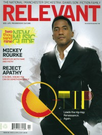

CMnexus
:
Contemporary Christian culture, music, and media.
Magazines
Profiles
Dove Awards
cmnexus.org
CM
nexus
→
Magazine list
→
Relevant
→
Issues
Relevant
Mar / Apr 2009, #38
< -- Prev
Issue list
Next -- >
Cover

Writers in this Issue
Conner, Matt
Hamm, Ryan
Lawrence, Cameron
Peterson, Dylan
Selders, Kevin
Q-Tip
Cover Feature:
"Hip-Hop's Renaissance Man" by Dylan Peterson
Q-Tip
, A Tribe Called Quest
Slices:
Brian "Head" Welsh
, campaign for 'I Am Second'
2009 New Music Guide:
"Daniel Smith Is An Indie-Music Wonder" by Dylan Peterson
Danielson Familie
"Q&A With Lead Singer Andy Hull" by Dylan Peterson
Manchester Orchestra
, Andy Hull
"Good Friends, Good Music, Good Cause" by Ryan Hamm
Aaron Dessner
on
Dark Was the Night
"The Day Job"
Aaron Dessner
Okkervil River
by Dylan Peterson
Sharon Jones
by Cameron Lawrence
Noah and the Whale
by Kevin Selders
"Come Together Right Now" by Matt Conner
CD Sales and trends
"Attack of the Folk" by Matt Conner
Folk
"trippie indie" by Matt Conner
"electric punk" by Matt Conner
"Mainstream Goes Indie" by Matt Conner
"09's Most Anticipated Albums" by Matt Conner
"Tunes With a Purpose" by Matt Conner
va albums with charity angles
Recommends:
Fiction Family
-
Fiction Family
The Appleseed Cast
-
Sagarmatha
Kanye West
-
808s & Heartbreak
An Horse
-
Rearrange Beds
Animal Collective
-
Merriweather Post Pavilion
Franz Ferdinand
-
Tonight: Franz Ferdinand
Bat for Lashes
-
Two Suns
Relevant Links
Official web site of Relevant
You may be able to find
Relevant
in a library near you:
check
Worldcat
< -- Prev
Issue list
Next -- >
CMnexus
(noun)
The magazine index
of modern music
and Christianity
© 2011 CMnexus. Last updated May 2025.
Contact:
Rants and other correspondence to:
editor -AT- cmnexus
-DØT- org
About